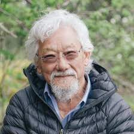

History | Accomplishments | Culture
David spent a lot of time studying genetics at UBC. With that knowledge and great public speaking skills led the birth of the hit TV show The Nature of Things. The Nature of things gave David Suzuki a platform to speak on climate change and protecting nature.On top of all that David has won countless awards and is still hosting The Nature of Things today. In order to achieve all of that he had to overcome obsticles such as losing a 10 thousand dollars reasearch loan to stay in Canada.